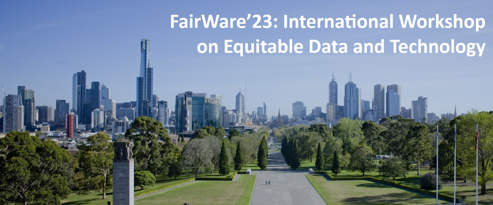

Fairware'23
The International Workshop on Equitable Data & Technology brings together academic researchers, industry researchers, and practitioners interested in exploring ways to build fairer, more equitable, data-driven software.
Co-located with ICSE’23, the FairWare’23 meeting will include
keynotes on software fairness form different perspectives. FairWare’23
will also host panel sessions to invite researchers and
the audience to engage in discussion.
Since many issues associated with fairness are often sociological in
nature, we welcome commentaries from outside of computer
science that can shed light on the complex issue of fairness.
What is software fairness?
As a society, we decide what attributes influence certain behavior. For example, race should not affect access to financial loans. Examples of real-world software exhibiting bias include image search and translation engines exhibiting gender stereotypes and facial detection and recognition tools’ depending on demographics.Is there research on software fairness?
There are many software engineering challenges to building fair software that has not been addressed, from specifying fairness requirements to analysis, testing, and maintenance. FairWare 2023 will bring together academic and industry researchers and industry practitioners interested in creating software engineering technology to improve software fairness.Why do we need more research on software fairness?
Recently, the requirements for fairer AI have become more common. The European Union, Microsoft, and the IEEE have all released white papers discussing fair and ethical AI. While these documents differ in the details, they all agree that ethical AI must be ``FAT''; i.e., fair, accountable and transparent. Such fairer "FAT"er AI systems support five ``FAT'' items:- Integration with human agency
- Accountability where conclusions are challenged
- Transparency of how conclusions are made
- Oversight on what must change to fix bad conclusions
- Inclusiveness such that no specific segment of society is especially and unnecessarily privileged or discriminated against by the actions of the AI.
Special Issue CFP
Following on from the workshop, there will be a journal special issue at the Journal of Systems and Software: “Over the horizon: Limits and breakthroughs in algorithmic fairness. What are our next steps?” (Dates TBD). As far as possible, reviewers from Fairware'23 will be reused for the journal special issue (so authors should know what revisions are required to turn their Fairware'23 paper into a journal paper).FairWare Resources
The FairWare conference is over, and what an experience it was! We gathered many resources, open questions and ideas for future FairWare editions from our great discussions. These are available in the link below. You are welcome to leave new ideas or resources as well!
Keynote: Fairness through Unfairness
Producing fair outcomes in a structural sense may actually require deliberately weighting software in favour of marginalised populations. Details TBD!
Speaker: Os Keyes https://ironholds.org/
Os Keyes is a PhD Candidate at the University of Washington’s Department of Human Centred Design & Engineering. Details TBD!
Paper Submission
Papers will be submitted through HotCRP, and will be subjected to double-blind reviews. Submissions must use the official “ACM Primary Article Template” from the ACM proceedings template. LaTeX users should use the sigconf option, as well as the review (to produce line numbers for easy reference by the reviewers) and anonymous (omitting author names) options. In addition, submitted papers must not exceed the 8-page limit, be written in English, must present an original contribution, and must not be published or under review elsewhere.
Two members of the program committee will review each paper and the committee will select the papers for presentation at workshop based on quality, relevance, and the potential for starting meaningful and productive conversations.
Workshop Participation
At least one author of each accepted paper must register for the workshop. Each paper will be presented in a 15-20 minute presentation with follow-up questions and discussion.
Important Dates
- Submission: 13 Jan
- Notification of acceptance: 24 Feb
- Camera-ready submission: 17 Mar
- Workshop date: 2X May
Schedule
TBD
Topics of Interest
To support fairer “FAT”er software we aims to empower software developers, individuals and organizations, with methods and tools that measure, manage, and mitigate unfairness. Therefore we ask for papers that explore:
- How to identify bias in AI models?
- How to explain the source or reason for this bias?
- How to measure the level of bias on these systems?
- How to mitigate bias by changing model training?
- How to support for explanations of automated decisions and redress for stakeholders for accountability and transparency of deployed systems?
- How to determine the trade-off between making fair(er) systems and other objectives of a system?
- Are there inherently unfair social pressures that doom us to forever delivering unfair software?
We are accepting contributions as full papers (4--8 pages), with either novel research results or a statement of vision or position, on one or more of the following perspectives:
- Improving fairness -- Present a novel approach or evaluate an existing approach for software fairness. This can be along the lines, but not limited to identification, explanation, measurement, and mitigation of fairness.
- Applying fairness -- artificial intelligence, machine learning, requirements and design, testing, software engineering cycle, and policy-making, among many other areas of interest.
- Pose challenges -- Show the weak points in fairness methods, and lead the way on the path to novel research. Request new models, processes, metrics, and artifacts.
- Collaboration studies -- Between researchers & industry, across the industry, across domains and disciplines, or col- laborations between research groups.
Programme Committee
Organizing Committee
- Brittany Johnson, George Mason University, USA
- Tim Menzies, NC State University, USA
- Federica Sarro, University College, UK.
- Zhe Yu, Rochester Institute of Technology, USA
- Yuriy Brun, U.Massachusetts, USA
- Jeanna Matthews, Clarkson University, USA
- Alicia Boyd, DePaul University, USA
- Justin Smith, Lafayette College, USA